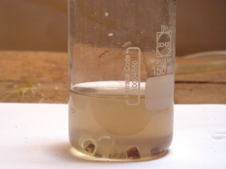

In chimica organica analitica (classica) il saggio di Lassaigne è una pietra miliare: con una procedura semplicissima permette di determinare se una sostanza ignota contiene zolfo, azoto o alogeni, singolarmente o anche tutti insieme.
Questo bel metodo, ideato nella prima metà del XIX secolo da Jean Louis Lassaigne (che io chiamo amichevolmente Sor Lasagna... spero che mi perdoni!) si basa sulla pirolisi della sostanza incognita con sodio metallico; in tal modo in presenza di zolfo, azoto o alogeni si vengono a formare rispettivamente solfuro, cianuro e alogenuro di sodio, i quali possono essere riconosciuti con opportune prove specifiche.
(Il saggio presenta delle difficoltà in caso di sostanze liquide volatili, ma tralascio questi e altri particolari).
La verifica dello zolfo va fatta come prima prova, perchè in caso positivo esso va eliminato dalla soluzione (con opportuna procedura) prima della ricerca dell'azoto e degli alogeni.
Procedura preliminare per preparare la soluzione madre di Lassaigne
In un tubicino da saggio ben secco si introduce un piccolo pezzettino di sodio metallico (circa 100-200 mg), vi si aggiunge poi il campione della sostanza solida da analizzare in altrettanta quantità e si copre il tutto con un ulteriore frammentino di sodio.

Si scalda lentamente a piccola fiamma il tubicino, tenendolo inclinato, in modo che il sodio fonda, si amalgami bene con la sostanza e sia emessa la minima quantità possibile di vapori volatili (anche sui volatili si possono condurre delle prove indicative); si aumenta a questo punto il calore fino ad arroventare bene la miscela e dar inizio alla pirolisi, che si mantiene al rosso almeno per un minuto.
Ora, con la massima cautela (guanti, occhiali, braccio teso e guardare altrove!) si lascia cadere il tubicino ancora rovente in circa 30 ml di acqua distillata contenuta in un becker abbastanza alto.
Naturalmente il tubicino si frantuma e avviene una istantanea e violenta reazione con l'acqua; se si fanno le cose come si deve non c'è però alcun pericolo reale.
Finito lo sfrigolio, rompere tutti i frammenti di vetro e mescolare affinchè tutto ciò che è solubile in acqua si sciolga; filtrare e tenere la cosiddetta soluzione madre di Lassaigne (deve essere bella limpida) per i successivi tre saggi specifici.

- il solfuro di sodio viene riconosciuto ponendo nel pozzetto di una piastrina in porcellana una decina di gocce di soluzione e aggiungendo, senza mescolare, qualche cristallino di sodio nitroprussiato Na3[Fe(NO)(CN)5].
In presenza di ioni solfuro si viene a formare attorno ai cristallini un nuovo complesso solubile di intenso color viola-magenta; la colorazione è molto labile e di durata limitata pertanto l'osservazione va fatta sul momento.
Una alternativa meno elegante ma efficace è mettere un paio di ml di soluzione in una provettina, acidificare con HCl e porre all'imboccatura della stessa una cartina imbevuta di soluzione di nitrato di piombo Pb(NO3)2; in presenza di acido solfidrico H2S si ha annerimento della cartina.
Entrambe le prove sono molto sensibili e confermano o meno la presenza di zolfo nel campione originale.
- il cianuro di sodio va evidenziato (previa eliminazione preliminare dello zolfo se era presente) in questo modo:
a qualche ml di soluzione si aggiunge una puntina di spatola di solfato ferroso FeSO4 e si mescola; si viene a formare un precipitato gelatinoso grigio verdastro di composti ferrosi in ambiente basico, che facilmente si ossidano a ferrici con colore più rossastro.
Nel contempo però si forma anche il complesso sodico ferrocianuro Na4[Fe(CN)6] molto stabile, il quale in presenza di ioni ferrici (aggiungere a tal scopo una goccia di acqua ossigenata) forma il ferrocianuro ferrico Fe4[Fe(CN)6]3 insolubile e colorato in blù intenso (Blù di Prussia).
Aggiungere a questo punto alla soluzione H2SO4 diluito fino a reazione sicuramente acida: la persistenza del colore blù conferma la presenza di cianuro (e quindi di azoto) mentre in sua assenza gli idrossidi di ferro si sciolgono e la soluzione appare quasi incolore o solo giallina.
- gli alogenuri di sodio (-Cl, -Br, I) vengono ricercati (anche qui previa eliminazione dello zolfo) acidificando qualche ml di soluzione con acido nitrico non in eccesso e aggiungendo una decina di gocce di nitrato d'argento AgNO3 0,1 M.
In presenza di alogenuri di sodio si vengono a formare i corrispondenti di argento sotto forma di precipitati densi e inconfondibili; bianco il cloruro, color crema il bromuro e giallo lo ioduro.
In caso di dubbio si possono discernere uno dall'altro per la diversa solubilità in ammoniaca.
La prossima volta, come il solito, accenderemo il bunsen e terremo provette e reagenti a portata di mano e andremo a ricercare l'azoto.
2 commenti